UNIT 6: TECHNICAL EQUIPMENT IN MULTIMEDIA PROJECTS
6.1. Definition of technical equipment in multimedia projects
Multimedia projects include a set of different areas made up of disciplines as diverse as those dedicated to working with word processing technologies and their different configurations, digital graphics, digital video and sound, as well as programming technologies. In other words, the creation of a multimedia project includes under a computer system the articulation and interaction of different graphic media, videos, sound, animations and text.
The codes that can be used in this type of environment are:
Texts: they correspond to information that allows reinforcing, through the incorporation of data, the understanding of a certain subject.
Sounds: these are used to promote a better understanding of the data provided. The types of sounds usually used are voiceovers, music and sound effects.
Graphic elements: they promote the understanding of concepts and ideas. Still images: they are used to represent a concept.
Video and animations: they allow a visual way of delving into other types of data and, with a more dynamic character, to represent concepts.
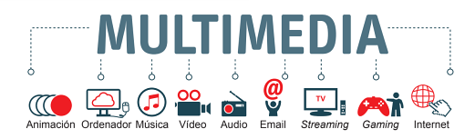
When planning a multimedia project, the following phases must be established:
1. Initial or design phase: at this stage, all aspects of the type of product to be dealt with must be considered and the content organized in such a way that flow diagrams can be drawn up, that is to say, how a system will work and the aspect that will allow all the information to be organized. Other points that need to be established at this point are those related to the technical and human resources that will be necessary to carry out the project and what the financial cost will be. Last but not least, the analysis of the target audience to which the product will be addressed and what objectives or death lines are to be set.
2. Interaction design phase: in this stage, aspects related to the different types of interaction, possible routes, shortcuts or what type of controls are to be used are established to be implemented, for example. All of this is articulated by the creation of a script that outlines the process.
3. Design of the presentation: in which the style of the project will be defined and a prototype or beta will be created.
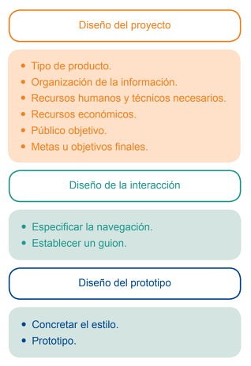
To carry out this type of project, a number of technical requirements will be necessary. The multimedia rooms should consist of the following devices:
1. PC or MAC computer: with powerful hardware capable of working with moving images, graphics, 2D or 3D animations, for example, and storage systems. On the other hand, a series of necessary software for working with the different materials to be used must be acquired.
a) Systems for digital audio capture and processing: it is possible to use audio processing software such as Sound Force, Pro Tools, etc.
b) Systems for digital video and image capture and processing: video processing software such as the range of programmes provided by Adobe (Premiere, Photoshop, etc.) or another interface such as Avid Media Composer or Final Cut can be used.
c) 2D and 3D animation work systems: highlights software such as those provided by Adobe (Animate) or in the area of 3D, Autodesk Maya, Blender, 3D Max, Houdino, Cinema 4D or Zbrush.
d) The different plug-ins needed by the software acquired to carry out the required tasks.
e) Systems for virtual reality work and design.
f ) Own multimedia creation systems such as Macromedia Director, Magix, etc.
2. Peripherals: such as screens, mouse, speakers, trackball, joystick, graphics tablet, touchpads, scanner, etc.
3. Storage systems: such as Raid (Redundant Array of Inexpensive Disks), this is a system of hard disks.
4. Internet connection: as a link mechanism between the device and the network that allows access to and use of different online services.
6.2. Technical qualities of computer equipment for multimedia productions
Multimedia projects are made up of a diversity of elements, and it is precisely in this diversity that the complexity of the technical qualities needed to equip the computer equipment used in this type of products. Aspects such as the RAM memory capacity of the internal hard disk or the type of graphics card, for example, will be fundamental factors for working with files as diverse as images, texts or videos.
In the following sections, the most important possibilities, characteristics and elements that should be taken into account when accessing the features of a computer designed for this type of work will be discussed in more detail.
Modern workstation hardware: NVMe, GPU compute and Apple silicon
Multimedia workstations have shifted from spinning disks and optical drives to NVMe SSDs on the PCIe bus, high-core-count CPUs and powerful GPUs that accelerate encoding, effects and AI. Apple's M-series (Apple silicon) integrates CPU, GPU and media engines on one chip, and hardware encoders/decoders (NVENC, QuickSync) offload video work from the CPU.
Sources: NVM Express (Wikipedia) · Apple silicon (Wikipedia)
Optical discs and floppy media
CD/DVD/Blu-ray burners, floppy diskettes and other removable optical/magnetic media are effectively obsolete for production. Modern machines often ship without an optical drive; distribution is by network, SSD or the cloud.
6.2.1. Processor, memory, hard disk capacity, optical recording and playback drives, graphics card and display
At present, the most widely used information storage system is the hard disk. The following aspects must be taken into account when choosing this type of device:
- Cost
- Characteristics of the hard disk
- In what work environment it will be used, that is to say, what its main function will be.
A Hard Disk Drive is made up of a series of elements:
A chassis, which is the hermetic structure and which incorporates the set of electronic devices. Disk.
How do hard drives work? - Kanawat Senanan
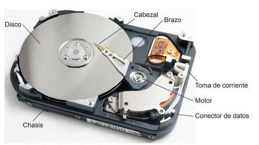
Hard disks can be magnetic or solid state. Magnetic hard disks (HDD) use magnetic fields on aluminium or glass disks on which information is stored. Solid state hard disks (SSD) use Flash memory to store information and allow faster access to information. They produce hardly any noise and are quite robust. SSDs come in two formats: 2.5 and 3.5-inch (pulgadas).
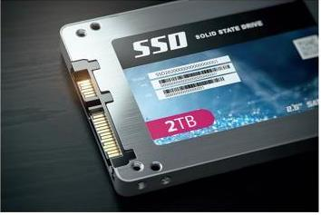
There are several characteristics to consider in a hard disk drive. The main ones are data storage capacity, which is measured in gigabytes (GB) or terabytes (TB), and performance, but these are conditioned by other factors such as the following:
Transfer mode: the mode in which data is transported from the hard disk to the RAM. Access time: used by the read and write heads to move over the area to be encrypted. Seek time: used by the heads to move from one track to another. Rotational speed: rotational speed of the disk. The faster the speed, the more power consumption and the noisier it is. Latency: the time required for the disk to rotate while the area to be written to is in the required position. Disk cache: refers to the part where data is stored so that it can be used quickly. How the hard disk is connected to another device.
Explained - Hard drives and storage types
8.1 Information on removable hard disks
Search for information on at least four different types of hard disk brands. Make a comparative
table that covers the main factors included in this section.
Hard disks can be used internally or externally. The main differences are that external hard disks
need an external power source to operate and are therefore more portable, easier to use and more
expensive than external hard disks.
Hard disks are connected to the computer via the following types of connections:
USB
FireWire
eSATA
Thunderbolt
iSCSI
SCI/SAS
Fibre Channel
The interface present on hard disks can be:
1. IDE (Integrated Device Electronics) or ATA (Advanced Technology Attachment): they have a
technology that allows compatibility between different devices. Hard disks and other devices can
be easily and cheaply connected to the computer. The motherboards have up to two slots where a
maximum of four hard disks can be connected, since each of them supports two hard disks, one of
them being the master, which is the main one on which the system has the preference when
booting up, and the other, a slave device, which is the secondary one.
2. SATA (Serial Advanced Technology Attachment): this came into use in 2000 and has been
replaced by the IDE interface. It works by directly connecting a port to a specific device, i.e. one
device for each of the connectors present. SATA data cables are used to make this connection.
3. SCSI: Used in many terminals including scanners and printers. They are usually incorporated in
high-end devices that have SCSI controllers.
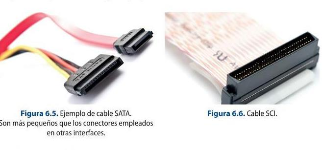
Hard disk partitions
Hard disks allow you to manage their capacity by creating partitions, so that you can manage files, backups or even install different operating systems. The logical partition of a disk allows working with a specific type of file and divides it into small units to store information. The difference between them is the type of system they use, which can be, broadly speaking, three: Linux, Windows and Apple.
In this sense, the partitions that can be established are:
EXT, EXT2 and EXT3: used in the Linux protocol. They are very reliable and allow working with files of different extensions, as well as detecting any type of system without problems.
FAT (File Allocation Table): it is possible to organise and access the system's data, and depending on the storage capacity created for MS-DOS there are variations. FAT was the most common until the appearance of Windows XP, which made it obsolete. Thus, for example, up to 2 GB the default format was FAT 16; between 4 GB and 32 GB, FAT 32, and from 64 GB onwards, exFAT.
NTFS (New Technology File System): provides a series of advances with respect to FAT, such as working with advanced structures, metadata support or the use of the disk space itself, among other aspects. This type of system does not allow working with positive MAC disks, as they are standard files for Windows.
HFS/HFS+ (Hierarchical File System): is a system that allows the hierarchisation of files has been designed by Apple and allows the recognition of the rest of the systems.
RAID of hard disks
It is a storage system in which all the hard disks that are needed can be connected to a network that can be local (LAN) or extensive (WAN). They are very useful in the professional field.
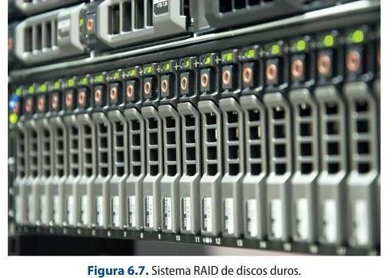
RAID 0, RAID 1, RAID 10 Floppy diskette
This type of magnetic storage device is no longer in use. In order to work with them, it is necessary to use a floppy disk drive, which is a recording and reading unit. The types of floppy diskettes are 8 inch, 5 ¼ inch, 3 ½ inch, 3 inch and 2 inch.
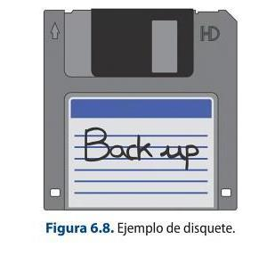
Optical storage device
The main optical storage devices currently on the market, but with great uncertainty as to whether they will continue to exist in the medium to long term, are CD-ROMs and DVDs.
There are many types of CD-ROMs, depending on the type of file they will contain, although it should be noted that, with technological advances, it is now possible to buy CDs that store different types of files indistinctly.
The main CD-ROMs are: CD-DA, for the storage of audio; CD-ROM, for data; CD-I, for multimedia elements; CD-ROM XA, for the storage of both data and video and audio; Multisession CD-R, whose main characteristic is the possibility of adding more data, while those devices which allow erasure and the possibility of re-recording are the Multisession CD- RW; Video CD, for the storage of video and audio in MPG1 (for files in MPEG 2 the Super Video CD device would be used).
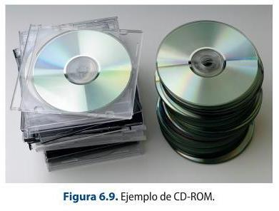
Glossary
Backup: this is the term used to designate backup copies. In the multimedia and post-production field, these copies are made of each of the projects carried out, so that they can be recovered quickly in the event that they are lost, damaged or need to be rescued. It is advisable to make backups every time the working day ends to prevent possible problems.
Another storage device mentioned earlier is the DVD (Digital Video Disk). Like CDs, they also have different types of formats depending on the type of material to be stored. In this way, it is possible to store read-only data on a DVD-ROM, video in MPEG format on DVD-Video or digital audio on DVD-Audio. On the other hand, this type of device also supports the possibility of re-recording data.
Another optical storage device is the Blu-ray Disc (BD), for storing between 25 GB and 400 GB of HD video and audio and data. It uses blue-violet laser technology, which allows more data to be managed in a smaller size. There are different types depending on their characteristics. Thus, there is the BD-ROM, which is used to store video games, films, etc., but is read-only; the BD-R, for one- time recording, and the BD-RE, which is rewritable.
Flash memory cards
Another information storage device are the different types of Flash memory cards that, thanks to their small size, resistance and large storage capacity, have been acquiring a greater presence in the professional field.
The USB drives that began to appear in 2002 have been varying their storage characteristics over time and improving their implementation at the level of transferring data downloads of any type (photographs, video, audio, text...). The capacity of a USB memory currently ranges between 32 MG and 4TB.
CompactFlash or CF cards came into use in 1994. The CompactFlash Association sets the specifications for this type of card. They are small in size and work in much the same way as hard disks thanks to the incorporation of an IDE (integrated electronic device interface). The main advantages are the speed of access to data and the fact that they can be used for the next use, as in the case of a camera.
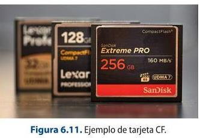
Another type of optical storage devices are Secure Digital cards, which started to enter the market around 2001. These cards are regulated by the SD Card Association.
1. SD cards: these are the most commonly used storage devices in digital cameras, tablets or mobile phones. There are three characteristics that must be taken into account when considering working with any type of SD card: the size, the speed at which data can be transferred and the information storage capacity. Depending on these characteristics, SD cards can also be classified as MicroSD and MiniSD. These types of devices can be used interchangeably as long as adapters are used to enable them to work with each other.
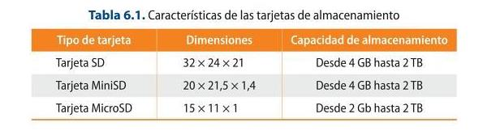
2. MultimediaCard: these are used in mobile phones and come in different types depending on their size or voltage.
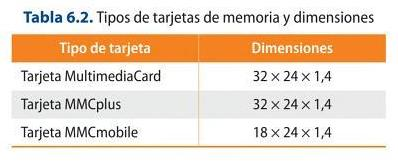
6.2.2. Printers and graphic tablets
Other devices that can be used in a multimedia project are printers and graphic tablets.
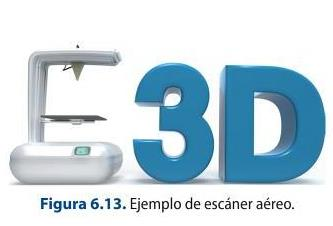
Other devices used in multimedia production are printers. In the vast majority of cases they have a built-in document scanning function. Printers make it possible to give a physical appearance to a digital document, which can be anything from a 2D to a 3D element. The factors to be taken into account when working with one type of printer or another are the printing speed and the quality of the printed image.
Printers, depending on whether or not they are in contact with paper, can be:
1. Impact printers: these printers are the ones that touch the paper.
2. Non-impact: these are those that have no contact with the paper and can be:
- Thermal: by means of a series of needles that run through the special thermo-sensitive paper. They are used by electronic payment terminals or POS terminals.
- Inkjet or ink-jet: these allow documents to be printed using tiny drops of ink of different thicknesses on the paper.
- Laser: this type of printer uses a photosensitive material on which a beam of light is directed by a photoreceptor drum.
Finally, there are 3D printers, which have evolved a lot in recent years. They allow the recreation of any type of element in 3D, from models to human organs, which is why their use has been extended to numerous fields of action such as the culinary or medical fields.
On the other hand, there are tablets, which are peripheral devices that allow the manual incorporation of any data, whether textual, graphic or drawing, into an electronic device. They are used in many fields ranging from animation to editing.
Graphics tablets usually consist of the following elements:
1. Stylus: performs the function of a conventional mouse. In this sense, it has several buttons that provide it with the different functions that can be carried out with a conventional mouse:
- The right mouse button.
- The left mouse button.
- Double click. Depending on the type of stylus and the settings made, this can be modified to suit the user's taste.
2. The tablet itself consists of:
- Sensitive area: a glass-covered LCD screen on which the different operations performed with the pen are carried out.
- Function keys: to which all the functions can be associated according to the requirements of the work to be carried out.
- USB cable: to connect the device itself to any computer.
- Drivers: these are applications that the device needs to establish the connection between the graphic tablet and the computer.
- LED indicator: shows the use of the device.
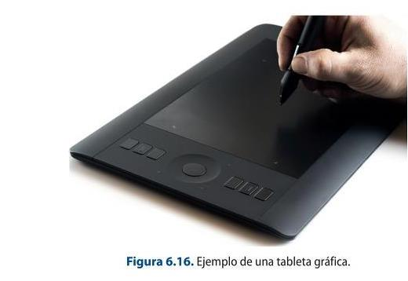
6.3. Networked configurations of computer equipment
The computer equipment used in audiovisual projects, and more specifically in multimedia projects, consists of a number of main elements which vary depending on whether a laptop or a desktop computer is used.
Hardware
The hardware of a computer refers to the different devices and tangible elements that make up a computer system, i.e., the physical components of the equipment.
1. Tower: this is the metal box that contains all the internal devices that make up the system itself. This part of the hardware is mainly composed of:
a) Processor or CPU: this is an electronic component that allows commands to be executed in such a way that the faster it is, the faster the operations will be carried out. The most relevant brands in this section are Intel and AMD.
b) Motherboard: this is a card that allows the various components present in the equipment to be connected. Currently they can house from one to eight microprocessors.
c) RAM memory: this is the place where the information to be used in the computer software is stored and which allows the information to be read and written, so that when the computer restarts.
d) Cache memory: this is another place where the information that the processor must use continuously is stored and, therefore, temporarily and more quickly than the RAM memory.
e) Hard disk: device that allows data, programmes and the operating system present in the computer to be stored.
f) Graphics card or GPU: processor that consists of a circuit to transform the information sent by the processor to the output monitor, so that it is representative.
g) CD-ROM or DVD reader: device that allows the reproduction of CD-ROM or DVD optical discs.
h) CD- ROM or DVD recorder: device intended for recording on CD-ROM or DVD optical discs.
i) USB, FireWire, internet... communication ports: these are the different integrated devices that allow the establishment of the different communications between them.
j) Video capture or video card: allows the capture of video and audio signals and the carrying out of streaming connections.
2. Peripherals: a set of devices attached to computer equipment that improve the work between the operator and the system.
a) Monitor: offers visual and graphic access to information for the user. The characteristics of this device will affect how the information provided by the computer is viewed, how our experience within a game or the viewing of a film may be.
On the other hand, when choosing between one type or another, it is important to be very clear about its main use and location. The main aspects to be taken into account are:
- The size, which is measured in inches (between 15 and 32 inches).
- The shape of the device, which can be flat or curved.
- The aspect ratio, or the height by width of the device.
- The resolution or pixel density. This can range from HD to 8K.
- The brightness, contrast and hue parameters.
- The refresh rate. This is measured in hertz and measures the frequency of how many images are produced in one second.
- Connectivity, to know the type of connections that can be used in the device.
Monitors can be LED, 4K, liquid crystal or LCD, DLP, touch and OLED.
b) Mouse: is the device that allows moving and accessing different data and applications through simple clicks.
c) Graphic tablet: device that acts in a similar way to a mouse, improving its functions by means of a stylus and a base to work with.
d) Printer: system that allows the printing of files on paper or other types of format.
e) Scanner: system that makes it possible to digitalise all types of materials in order to be able to work with them in other software.
f) Speakers or headphones: audio monitoring systems.
g) External hard disks: information storage systems.
Software
Software refers to the different intangible tools that can be found in an operating system and that allow the execution of different functions depending on the specialisation and ultimate purpose of the application itself.
1. Operating system: this is the part that allows resources to be managed in a specific way. There are a multitude of operating systems such as Windows, Mac iOS, Linux or Unix, among others. It is important to note that the type of operating system that the computer has will determine the standard system of the software that can be installed and used.
2. Specific programmes: these are all those applications that allow a specific function to be carried out according to a certain area. For example, in the field of video editing, there are programmes such
as Final Cut or Avid Media Composer. In the area of 2D and 3D animation, Blender or Maya stand out. Even the Office package provides a set of software that offers such basic functions as writing documents, sending e-mails, creating tables, etc. When it comes to establishing the requirements that a computer must have for a specific task, such as the creation of multimedia projects, it is always necessary to work smoothly between the different projects, so a good graphics card is essential to carry it out; it is also important to have a good RAM memory capacity and the type of processor chosen (Core i7, for example). As for the type of hard disks that we have seen in previous sections, the best ones, due to the type of features they provide, are SSDs.
Networking and the cloud today
Local networks now run Gigabit/10-Gigabit Ethernet and Wi-Fi 6/6E, and fibre to the premises is common. Storage and collaboration have moved to the cloud (object storage, shared drives) and to on-prem NAS, replacing the removable media and simple LANs described in the book.
Sources: Wi-Fi 6 (Wikipedia)
6.3.3. Types of networks, digital signal or optical fiber, data transfer rate
The work performed in the audiovisual area, and more specifically in the area of multimedia products, is often carried out between two or more computers. The way in which they are connected is called a computer network. Computer networks can be classified according to:
1. Coverage area: that is, according to the distance between the different devices to be connected to each other.
a) Personal Area Networks or PAN: communication between the different devices is very few meters, as it has a user's computer in your office.
b) Local Area Networks or LAN: corresponds to a local network or a limited environment. It is present in an office building, for example.
c) Metropolitan Area Networks or MAN: this is a network that covers a larger area of land, such as a city.
d) Wide Area Networks or WAN: this is the network that connects huge areas of land, between continents. The best known example is the Internet.
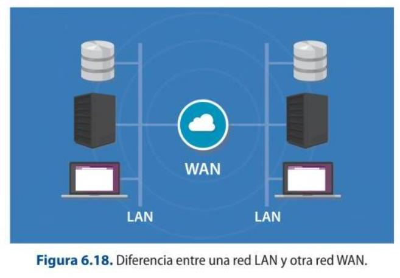
Network Types: LAN, WAN, PAN, CAN, MAN, SAN, WLAN
2. Access level: refers to the way in which the different users are connected.
3. Their functional relationship: this is the type of relationship established between the different connected devices. Depending on this parameter, it can be:
a) Client-server: this type of system uses servers to which all the necessary devices are connected, and they are called clients. The server in this case is the fundamental mechanism that allows the connection of all the devices in the network.
b) Peer to peer: in this type of connection all the devices are equal. There is no hierarchy, so there is no mechanism to intervene in the access to the different resources.
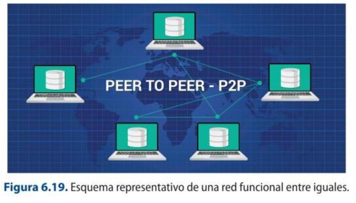
Technical Glossary
Server: a device that attends and responds to the different requests made by all the
computers connected to it. There are different types of servers depending on the type of service they provide:
E-mail servers: these are those that allow working with the e-mail service on a network. Some examples are POP3 or SMTP servers.
Web servers: they host HTML resources that include any type of resource in their files. These files are stored in the hosting.
Database servers: allow the work and management of this type of information.
Audio or video servers: enable the work and storage of audio and video files.
Cloud servers: these are information storage spaces, which can be accessed from any place, location or device that is connected.
4. Its topology: this refers to the layout or architecture in which the different devices are connected. There are many types of networks according to their layout. The most important ones are:
Ring-shaped.
Bus-shaped.
Tree-shaped.
Star-shaped.
In the form of mesh.
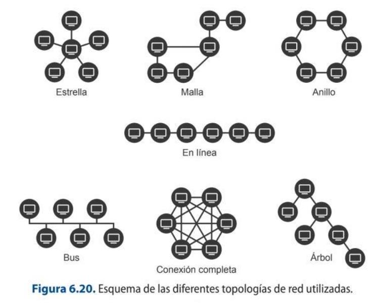
Network Topologies
The terminals that allow the connection between the different computers that make up a network can be of various types:
1. NIC or network card: to connect the computers to each other using a cable or wirelessly.
2. Modem: a device that connects the PC to the telephone line or Internet. Modems can be asynchronous (ASYNC), which do not have a clock device to synchronize the work between the transmitter and receiver, or synchronous, which are those that send the bits as a frame whose transfer is synchronous and verified.
3. Router: is a device that allows the connection of different networks, such as the Internet or a LAN network, by means of an IP address, which is a 4-byte identifier.
4. Switch: is a system that allows connecting different devices from which the bandwidth can be efficiently delimited among all those that are linked.
5. Access point: it works in a very similar way to the Switch, but uses wifi to transmit the information.
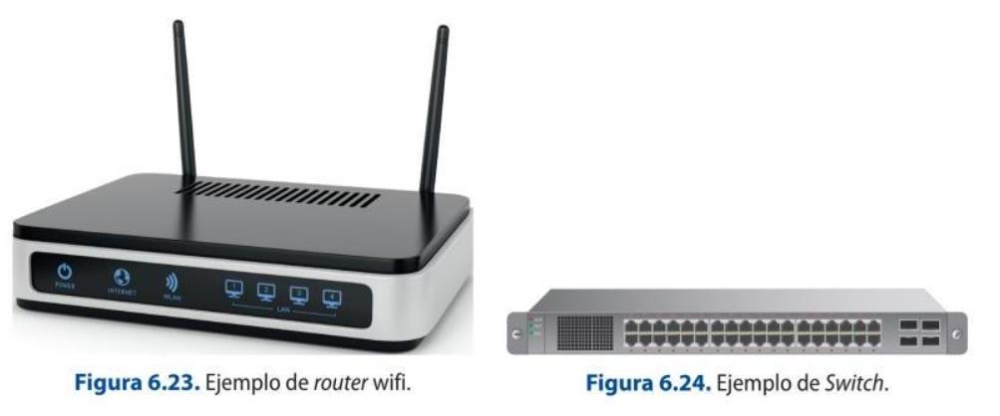
The different computers that make up the network must in some way be connected to each other in order to carry information from one point to another. With technological advances, transmission systems have been evolving and implementing improvements in terms of speed, security and reliability. The main means of transmission are:
1. Coaxial cable: it is an expensive and difficult to install system, so it has been disappearing in this type of installations. The transmission speed they can reach is 10 Mbps.
2. Twisted pair cables: these are composed of four pairs of copper wires with different colors according to the RJ-45 standard. The transmission speed they offer ranges from 100 Mbps to 1 Gbps.
3. Optical fiber: uses pulses of light to transmit information faster. It is an expensive system, but it is the one that provides the greatest bandwidth.
4. Waves: there are two standards that have been established to connect equipment and they are the wifi signals, used to communicate computer networks, and Bluetooth, to communicate devices.
Technical Glossary
Transmission speed: once the relationships between the different operators have been established, this is the value that will influence the speed at which information can be transmitted over a network. The transmission speed can be modified or attenuated due to changes in the electrical signal, or because
composite signals made up of several frequencies are produced.
6.3.4. Storage methods: formats, compression
The ideal way to work with computer files, especially video and audio files, is to perform compression operations on them in order to send, store or transmit them. Compressing a file consists of making its weight smaller, so that it takes up less space and facilitates its exchange between other systems.
To perform this type of operation, there are compression applications that generate extensions such as .rar, .ace, .arj or .zip. These applications create a new file that is characterized by a smaller size than the original in order to facilitate its transfer.
It is important to note that in order to be able to view or use it again, it has to be extracted, i.e. the reverse operation has to be performed to allow the reconstruction of the original file. Depending on the weight of the file, there are applications that, in order to carry out the compression process, allow the file to be split before compressing it to facilitate the operation. In the same way, the file resulting from the operation can be encrypted, i.e. it is possible to apply a password to the package so that it can only be extracted if the user knows it. This type of operation allows data and information to be transferred securely.
1. Compression with loss.
2. Lossless compression.
A file that has been compressed in a certain format, if you want to convert it to another format, it is necessary to decompress it or to recompress the original with another compressor that allows the
creation of that other format. It is important to note that a file that has already been compressed, if you want to change its weight, you should not compress it again, as this will not be possible.
Depending on the operating system used, there are a number of common formats:
On Windows or Mac iOS, the most common formats are: .zip (usually done using the WinZip) and .rar (using the WinRAR application).
In Linux, the most common formats are: .gz, which is an archive generated by gzip, which only allows compression, in the same way as with .bz2; in order to be able to package it, .tar is used.
In order to carry out this type of action, the first thing to do is to have software installed that allows this type of activity to be carried out. Select the file and right-click to open the software and perform the operations. A file with the desired extension and the required characteristics is automatically generated in the same folder.
6.3.5. Back-up copies
It is recommended, whenever working with computers, to make a backup copy of the projects carried out at the end of the working day. This type of operation allows the user to reload previous versions of the project in question or even to solve file corruption problems. This action provides a backup when faced with the different problems arising from the computer systems and which may jeopardize the final delivery to a client.
External hard disks, pen drives or the cloud are often used to carry out this process. Aspects related to hard disks and pen drives have been discussed above. The cloud or Cloud Computing is a concept that implies a storage system hosted on a server and that allows a multitude of applications to save, store, access or even run programs remotely on any synchronized device. The cloud, unlike the hard disk, allows the storage of information without the need for the user to use a physical medium, as it is hosted on a server that provides a certain storage capacity free of charge and the option to expand it at a certain cost.
Depending on the type of project you are working on, it can include different elements and provide a number of advantages such as:
Project versions.
The original video, audio or image files.
Additional materials such as databases, work dossiers, etc.
It can be accessed from any device anywhere, as long as there is an internet connection.
It allows hosting software to be applied.
It is an inexpensive storage system for information, software, etc.
It is a flexible and fast operating device.
It allows communication and teamwork from different terminals without the need to be in the same space, not even in the same country.
It allows automatic updating of the different applications.
There are many advantages to this type of security operations, but above all they allow a template of the work carried out to be saved which, with the passage of time, can be recovered to become operational again.
It is also possible to back up the operating system, which will allow software versions to be restored and information to be retrieved from the point in time when the backup was made. Depending on the system, users can make the copies manually or through applications, such as the one offered by Mac iOS systems, called Time Machine, which automatically makes a copy of all information, versions and system configurations.
Clouds can be public or private services. For example, the storage made possible by the Gmail email account is public and free up to a certain storage capacity. On the other hand, companies often use devices in the cloud through private networks called VPNs.
6.4. Technical and operational performance of image processing applications
There are many requirements that are essential for working with images, whether still or moving, within applications. As we have seen, the technical characteristics of the equipment, as well as the type of software used under a given operating system, can influence the performance and final achievement of a multimedia work. Images can be of two basic types, and depending on this, their characteristics and operational arrangements are established:
1. Real images: are those that are achieved through the actual capture of their referent. For this purpose, a series of devices are used, such as video or photographic cameras. The files generated must be incorporated into the different systems by ingesting the material, which can be done in two ways:
a) Importing the files: this requires a card reader that can be connected to the tower and has the necessary drivers installed to work with it.
b) Capture of the material via FireWire or USB: system that allows the material to be ingested into the computer system, mainly.
2. Computer-generated images: they can be created through professional or domestic applications that allow them to be obtained. These applications can be free or paid, and it is possible to improve them by inserting plugins in their respective systems.
Technical Glossary
Plugin: is an application that adds some kind of enhancement, performance or functionality to software. Depending on the type of program, plugins are developed
AI in image and media tools
Image and video applications now include AI/ML features as standard: generative fill and object removal, upscaling and denoising, background removal, auto-masking and rotoscoping, and speech-to-text captioning. These accelerate tasks that were manual when the book was written.
by companies that will allow their implementation in one or more types.
6.4.2. Relationship with different interactive projects, audiovisual web design, video games, DVDs and other media
The widespread use of the Internet worldwide thanks to the improvement of technical conditions, such as bandwidth, has led to the emergence of different types of products that allow greater interaction and access to information from different proposals. In this field, multimedia projects have begun to have a greater presence. The main projects are:
Multimedia: they allow the articulation of a multitude of file types such as graphics, animations or videos.
Hypertextual: they can deconstruct the linear reading of information and, through the use of hypertexts, establish different actions to access the data required.
Hypermedia: they integrate both procedures.
Any of these projects can be organized according to a type of structure that allows them to be navigated, as follows:
Linear or sequential navigation system: by means of a single path, they enable access to the different materials. An example of this type of navigation is present in multimedia books. Reticular navigation system: they allow access to the files through multiple paths with the use of hypertexts. An example is the navigation present in online newspapers. Hierarchical navigation system: based on the use of both systems mentioned above, allowing access through different paths, but in an organized way according to criteria such as the type of content.
Multimedia projects can be applied to numerous areas, such as multimedia books, encyclopedias, dictionaries, etc., and they can be modified in different ways to the extent that they do or do not meet the demands of consumers. In this way, programs can be:
Open: they can be modified according to the needs of each user.
Closed: they cannot be modified by the user under any circumstances.
Semi-open: they do allow the modification of some parameters that may or may not facilitate access to other paths that respond to the user's needs.
File downloading can be done in a direct and traditional way, so that the user downloads the file to a disc and, once the process is completed, proceeds to its use or visualization. Another way would be to play the information in parallel to its download to the destination disk. This type of downloading is known as progressive or pseudostreaming. And the last form would be the one that allows real-time access to the information through a network without the need to download the file, which is the system known as streaming.
Streaming facilitates the consumption of audiovisual products either live or on demand. Some of the characteristics of this type of live information downloading procedure are:
It facilitates multicasting, i.e. the transmission of a video that can be consumed simultaneously by different users.
It does not allow direct interaction: the only thing that can be done is to stop or replay the video.
The transmission of the information provided can be individual (Unicast) or the same for all users (Multicast).
The consumption of videos on demand allows them to be accessed at any time required by the user, so that the information sent is individual for each user and it is possible to interact with their playback in a more active way than in the previous case.
8.5 Streaming ON-DEMAND
Determine the main usage characteristics of two platforms that offer video on demand and see
the differences and similarities between them. Netflix or HBO can serve as examples.
8.6 Podcast
You are going to create a teaser of your Shortfilm and share them in social
networks.
8.4.4. File formats and configuration options for different devices
Still images that can be used in a multimedia project can be obtained from devices such as cameras, scanners, screenshots taken from the computer or mobile devices. The most commonly used file types for working with still images are: .SGI, .PSD, .BMP, .TIFF and .TGA, mainly.
In order to ingest the material into the computer, i.e. import the different files and then proceed to work on them with the corresponding application, the following scheme or block diagram should be followed:
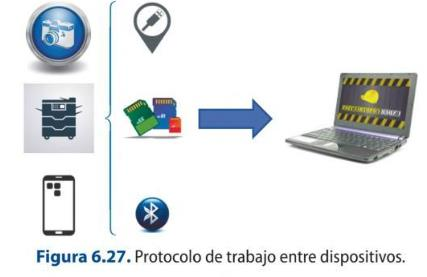
The most used multimedia files are:
For video: .avi, .mov, .vob, .mkv or .webm. The most common codecs are: mpeg, h264, mpeg4.
For audio: Mpe3, aac, vorbis, flac, pcm. With codecs: mpeg 2, mp4, ogg
8.4.5. Image formats and audio formats
Digital video consists of the binary representation of audio and image information, i.e. its transcription into zeros and ones. This provides a number of advantages that have led to its institutionalized use. The main contributions have to do with the lack of loss of quality in the copies, or rather, of the video clones, since they are exactly the same as each other, so that this process can be carried out infinitely obtaining identical results. On the other hand, digital technology is cheap and compact, which makes it more versatile and easier to handle than analogue technology. On the other hand, the biggest drawback of this type of technology is related to the memory requirements necessary for storage and transmission, so that to do this quickly and efficiently, the signal is compressed.
Digital videos can be saved in different formats, so they are identified by a specific extension that allows you to know which format they are. In addition, each file format supports a different compression codec.
When working with videos for multimedia projects, the concept of streaming must be kept in mind, which is a technology that facilitates and optimizes the uploading and playback of the file in advance from a remote server. In a simplified way, it can be stated that the operation of this type of system is based, in the first place, on a computer connecting with the server, which is in charge of sending the required file. In this way, the equipment begins to receive it and a store is built, where it begins to be saved, which is called a buffer. When a part of the original has been formed in this buffer, it can be viewed while the rest of the file continues to be downloaded in the background. It can happen that, once all the information contained in the buffer has been consumed, the playback of the buffer stops until the process is repeated. This is due to drops in network connection speed.
Streaming can be carried out in two ways, depending on the technology used in the server:
Streaming carried out by progressive download: this consists of the server releasing the file requested by the client through web servers, so that they would be loading the information in buffer and when it is ready, viewing would begin.
Streaming carried out by streaming: where the streaming is done from multimedia servers that allow better management of video and audio downloading.
In this way, operations can be carried out simultaneously without the need for prior storage on the user's terminal, which is very useful for the live broadcasting of events over the Internet. But for this type of procedure to be carried out correctly, it is very important how the file is handled beforehand, i.e. what type of weight optimization has been selected for playback in the editing process. If we separate the two basic components of a multimedia file, such as video and audio, the main parameters that must be taken into account to carry out this process are:
On the audio side:
The compression codec used. It should be noted that audio is not normally compressed in audio-visual projects. The audio resolution used, i.e. 32-bit, 16-bit, 8-bit, etcetera. The sampling rate of the audio which typically ranges from 44 100 Hz to 48 000 Hz. The bitrate or transmission rate. The quality of the audio in terms of whether it is stereo or mono.
On the video side:
The video compression codec used. What kind of bitrate method is applied. The bitrate or the transmission rate. The dimensions of the file. The frame rate per second.
There are a number of other elements present in audiovisual files that also affect the file optimization process and must be considered for both audio and video:
The total duration of the file itself, so that it is sometimes better to split it up for broadcasting. The file format. It should be taken into account that the most convenient file formats on the Internet are .wmv, .mov or .flv.